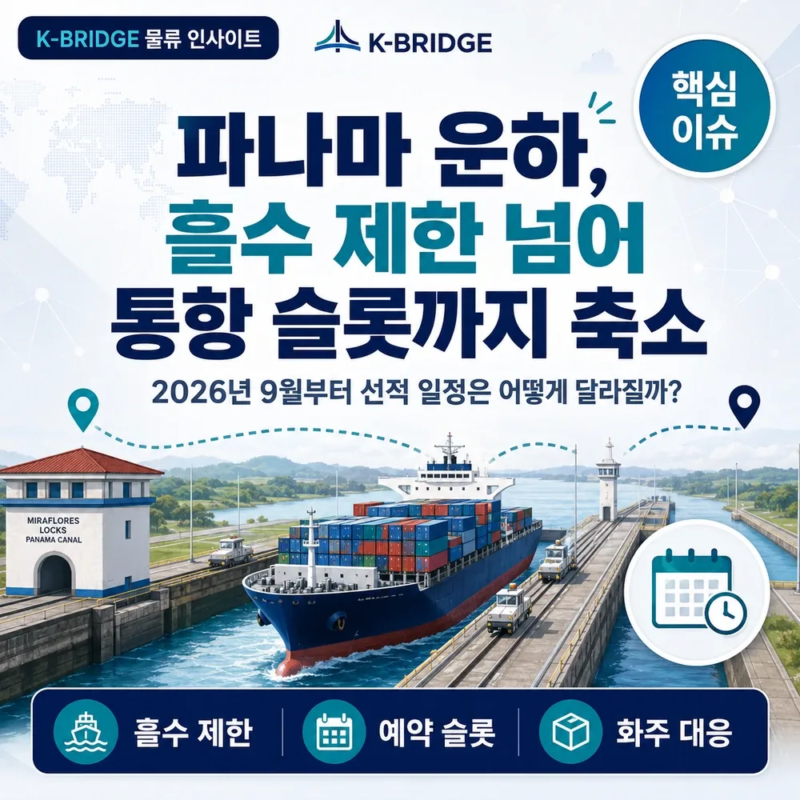
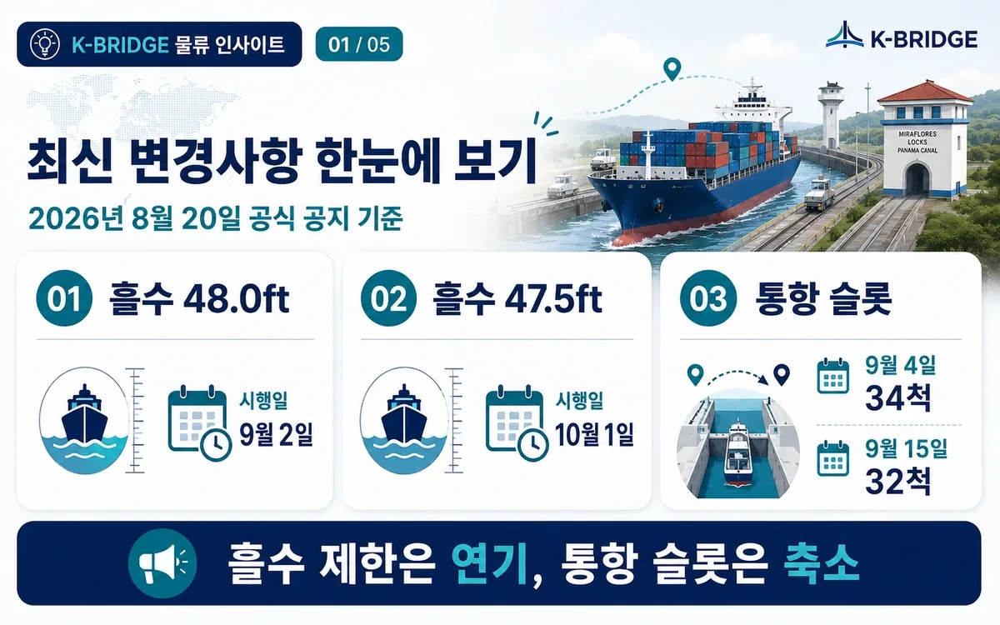
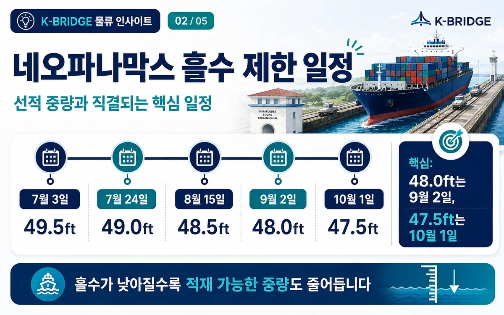
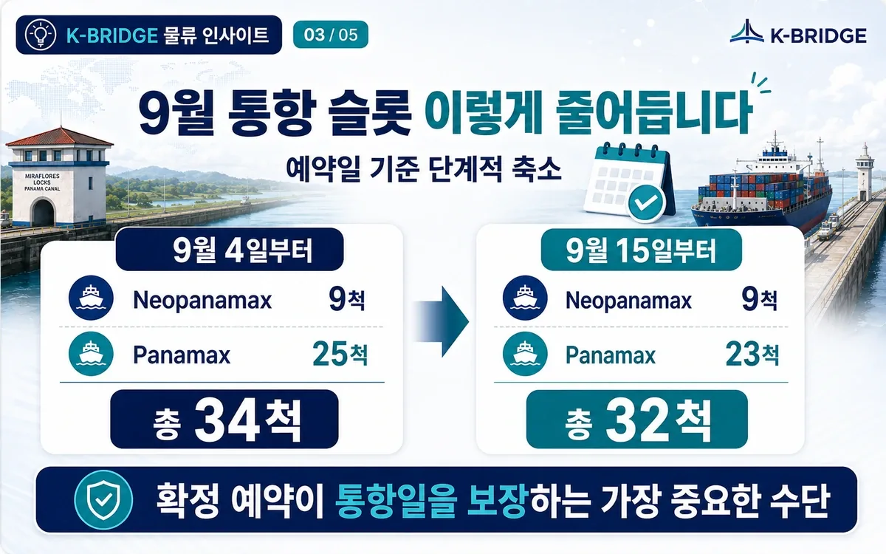
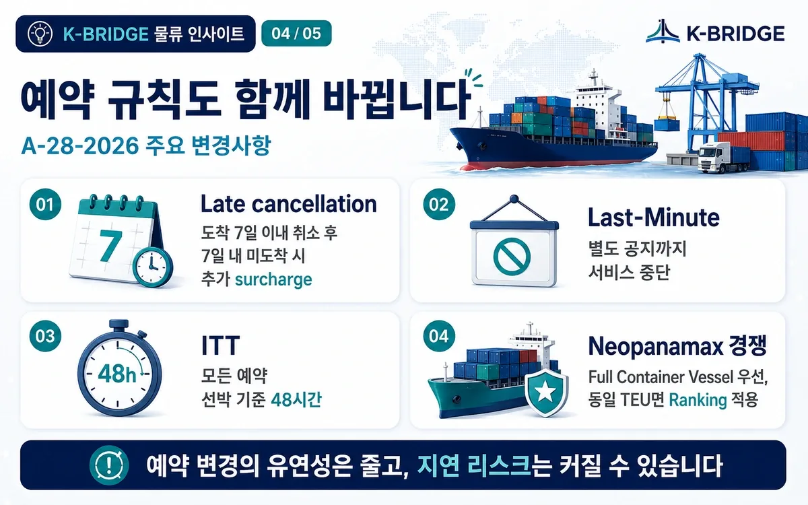
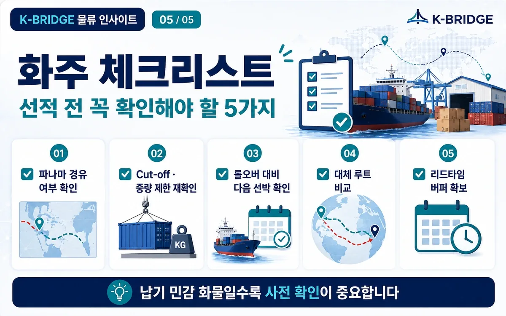

파나마 운하, 흘수 제한 넘어 통항 슬롯까지 축소
2026년 9월 선적 일정은 어떻게 달라질까요?
파나마 운하 이슈는 이제 단순한 흘수 제한만의 문제가 아닙니다. 2026년 8월 20일 공식 공지에서는 48.0ft와 47.5ft 시행일 조정과 함께 9월 통항 슬롯 축소, 예약 규칙 변경까지 동시에 발표됐습니다. 이번 글에서는 한국 화주와 수출기업이 꼭 알아야 할 내용을 복잡하지 않게 나눠서 정리해드립니다.

먼저 답부터 보면
핵심은 두 가지입니다. 흘수 제한은 일부 일정이 뒤로 미뤄졌지만, 통항 슬롯은 9월부터 실제로 줄어듭니다. 즉, 배에 얼마나 실을 수 있는지와 하루에 몇 척이 지나갈 수 있는지를 함께 봐야 합니다.
특히 미국 동안·걸프향 서비스처럼 파나마 운하 경유 여부가 중요한 화물은 선복, 중량, Cut-off, 롤오버 가능성을 기존보다 더 꼼꼼하게 확인해야 합니다.
48.0ft 흘수 제한 시행
당초 8월 말 예정이었지만 최신 공지에서 9월 2일로 조정됐습니다.
47.5ft 흘수 제한 시행
한 단계 더 낮아지는 제한으로, 적재 중량 관리가 더 중요해집니다.
9월 통항 슬롯 축소
예약일 기준 9월 4일부터 34척, 9월 15일부터 32척으로 줄어듭니다.
1. 이번 공지에서 무엇이 바뀌었나요?
이번 변경은 하나의 숫자만 바뀐 것이 아닙니다. 파나마운하청은 2026년 8월 20일 공지에서 흘수 제한 시행일, 일일 통항 슬롯, 예약 시스템 운영 방식을 함께 손봤습니다.
쉽게 말하면, 선박이 운하를 통과할 때 얼마나 깊게 잠길 수 있는지뿐 아니라 하루에 몇 척까지 예약을 받아 통과시킬 것인지도 조정한 것입니다. 그래서 이번 이슈는 선적 중량과 스케줄을 동시에 건드리는 변수로 봐야 합니다.
화주 입장에서는 단순히 “배가 덜 싣는다”에서 끝나는 것이 아니라, 예약 확보 여부에 따라 선적 순서와 선복 안정성도 달라질 수 있다는 점이 더 중요합니다.
흘수 제한은 일부 시행일이 뒤로 밀렸지만, 통항 슬롯은 실제로 줄어들기 시작합니다. 즉, 부담이 사라진 것이 아니라 운영 방식이 더 보수적으로 바뀐 것입니다.

2. 흘수 제한 일정은 왜 중요한가요?
흘수(Draft)는 선박이 물속에 잠기는 깊이입니다. 같은 선박이라도 화물을 많이 실으면 더 깊게 잠기기 때문에, 허용 흘수가 낮아질수록 선사는 안전하게 통과하기 위해 적재 중량을 줄일 수밖에 없습니다.
이번 일정은 특히 중요합니다. 기존에는 48.0ft와 47.5ft가 더 빠르게 적용될 것으로 알려졌지만, 최신 공지에서는 48.0ft는 9월 2일, 47.5ft는 10월 1일로 조정됐습니다. 이 조정은 선사 운영에는 숨통을 조금 틔워주지만, 9~10월 선적분의 중량 관리 필요성이 사라졌다는 뜻은 아닙니다.
| 적용일 | 최대 허용 흘수 | 의미 |
|---|---|---|
| 7월 3일 | 49.5ft | 2026년 하반기 제한 시작 |
| 7월 24일 | 49.0ft | 추가 하향 조정 |
| 8월 15일 | 48.5ft | 실제 적재 관리 강화 구간 |
| 9월 2일 | 48.0ft | 기존 예정보다 연기된 최신 시행일 |
| 10월 1일 | 47.5ft | 추가 감축 단계 |
- 중량 화물, 고밀도 화물, 프로젝트성 화물은 선사별 중량 정책을 더 자주 확인하는 것이 좋습니다.
- 같은 0.5ft 차이여도 선형, 연료량, 밸러스트 상태에 따라 실제 적재 가능 중량은 달라질 수 있습니다.

3. 9월부터 통항 슬롯은 어떻게 줄어드나요?
이번 이슈에서 많은 화주가 놓치기 쉬운 부분이 바로 일일 예약 슬롯입니다. 파나마운하청은 예약일 기준으로 9월 4일부터 총 34척, 9월 15일부터 총 32척의 슬롯을 운영한다고 밝혔습니다.
여기서 중요한 해석은 간단합니다. 운하를 지나는 배의 수가 줄어든다는 것은, 같은 시기 운하를 이용하려는 선사끼리 예약 확보 경쟁이 더 치열해질 수 있다는 뜻입니다. 결국 일부 서비스에서는 출항일 조정, 롤오버, 대체 선박 투입이 더 자주 발생할 수 있습니다.
| 적용 시점 | Neopanamax | Panamax | 총 슬롯 | 실무 해석 |
|---|---|---|---|---|
| 9월 4일부터 | 9척 | 25척 | 34척 | 예약 확보 여부가 스케줄 안정성의 핵심 변수 |
| 9월 15일부터 | 9척 | 23척 | 32척 | 추가 축소로 일부 항차 변동 가능성 확대 |
화주가 직접 운하 예약을 하지는 않더라도, 이용 서비스가 안정적으로 예약을 확보했는지는 반드시 확인해야 합니다. 결국 확정 예약이 통항일을 보장하는 가장 중요한 수단이기 때문입니다.

4. 예약 규칙도 함께 바뀝니다
운하청은 A-28-2026 공지를 통해 슬롯 숫자만이 아니라 예약 규칙도 조정했습니다. 화주에게는 낯설게 보일 수 있지만, 결국 이 변화는 선사의 예약 유연성 축소와 지연 리스크 확대로 연결될 수 있습니다.
이번에 특히 볼 부분은 Late cancellation surcharge, Last-Minute 서비스 중단, ITT 48시간 조정, 그리고 Neopanamax 경쟁 방식입니다.
| 항목 | 주요 내용 | 화주가 볼 포인트 |
|---|---|---|
| Late cancellation | 도착 7일 이내 취소 후 정해진 기간 내 미도착 시 추가 surcharge | 선사 운영 부담 증가 → 일정 변경 비용 반영 가능성 |
| Last-Minute | 별도 공지까지 서비스 중단 | 긴급 조정 여지가 줄어듦 |
| ITT | 모든 예약 선박 기준 48시간 적용 | 운항 계획이 더 보수적으로 짜일 수 있음 |
| Neopanamax 경쟁 | Full Container Vessel 우선, 동일 TEU면 Ranking 적용 | 선사별 예약 경쟁력 차이가 반영될 수 있음 |

5. 한국 화주에게는 어떤 영향이 있나요?
모든 미주 화물이 같은 영향을 받는 것은 아닙니다. 일반적인 미국 서안 직항 서비스는 파나마 운하 의존도가 낮지만, 미국 동안·걸프향 서비스나 일부 중남미 서비스는 운하 경유 여부를 반드시 확인해야 합니다.
특히 아래 세 가지 유형은 영향도가 상대적으로 높을 수 있습니다.
중량 화물
철강, 기계, 화학제품처럼 무게 비중이 큰 화물은 선사별 적재 중량 정책의 영향을 더 크게 받을 수 있습니다.
납기 민감 화물
설치 일정, 생산 일정, 납품 패널티가 걸린 화물은 스케줄 변동 여지를 미리 점검해야 합니다.
장기 계약 화물
9~10월 출항분은 리드타임 버퍼와 안전재고를 다시 계산해보는 것이 좋습니다.
6. 케이브릿지가 권하는 실무 체크리스트
현장에서 가장 중요한 것은 “상황을 아는 것”보다 “실제 선적 전에 무엇을 다시 확인하느냐”입니다. 아래 항목은 미국 동안·걸프향 또는 파나마 경유 가능성이 있는 화물이라면 최소한 다시 점검해볼 만한 기본 체크리스트입니다.
- 파나마 경유 여부를 선박명·Voyage 기준으로 다시 확인합니다.
- Cut-off와 중량 제한이 바뀌지 않았는지 출항 직전 재확인합니다.
- 롤오버 발생 시 다음 가능한 선박과 예상 지연일을 미리 확인합니다.
- 대체 루트의 리드타임과 총비용을 비교합니다.
- 리드타임 버퍼와 안전재고를 납기 중요도에 맞게 다시 잡습니다.

7. 자주 묻는 질문
Q. 9월부터 하루 32척으로 바로 줄어드나요?
A. 아닙니다. 예약일 기준으로 9월 4일부터 총 34척, 9월 15일부터 총 32척으로 단계 적용됩니다.
Q. 48.0ft 제한은 8월 말이 아니라 9월 2일인가요?
A. 네. 최신 공식 공지 기준으로 48.0ft는 9월 2일, 47.5ft는 10월 1일로 조정됐습니다.
Q. 화주가 직접 운하 예약을 해야 하나요?
A. 일반적으로는 선사가 운하 예약을 관리합니다. 다만 화주는 이용 서비스가 파나마를 경유하는지, 예약 확보가 안정적인지, 대체 선복이 있는지를 포워더와 확인하는 것이 좋습니다.
Q. 지금 바로 우회 항로로 바꾸는 것이 맞을까요?
A. 모든 화물이 동일하게 대응할 필요는 없습니다. 납기, 운임, 중량, 선사 스케줄 안정성을 함께 비교해 결정하는 것이 좋습니다.
자료 기준 및 출처
- Panama Canal Authority, Advisory to Shipping A-29-2026, Additional Measures to Address Reduced Precipitation in the Canal Watershed, 2026-08-20.
- Panama Canal Authority, Advisory to Shipping A-28-2026, Transit Reservation (Booking) System - Rule modifications, 2026-08-20.
- Panama Canal Authority, Advisory to Shipping A-25-2026, Adjustment to the Maximum Allowable Draft in the Neopanamax Locks, 2026-08-05.
- Panama Canal Authority, Advisory to Shipping A-22-2026, Draft adjustment in the Neopanamax Locks, 2026-07-01.
- Panama Canal Authority, Advisory to Shipping A-26-2026, Monthly Canal Operations Summary – July 2026, 2026-08-10.
※ 본 콘텐츠는 2026년 8월 23일 기준 공개된 공식자료를 바탕으로 작성했습니다. 실제 선적 전에는 선사 공지와 최신 운하 운영 조건을 다시 확인하시기 바랍니다.
미주 동안·중남미향 선적 일정이 걱정되시나요?
케이브릿지는 선사별 스케줄, 파나마 경유 여부, 선복·중량 조건, 대체 루트까지 함께 비교해드립니다.
해상운송 문의하기